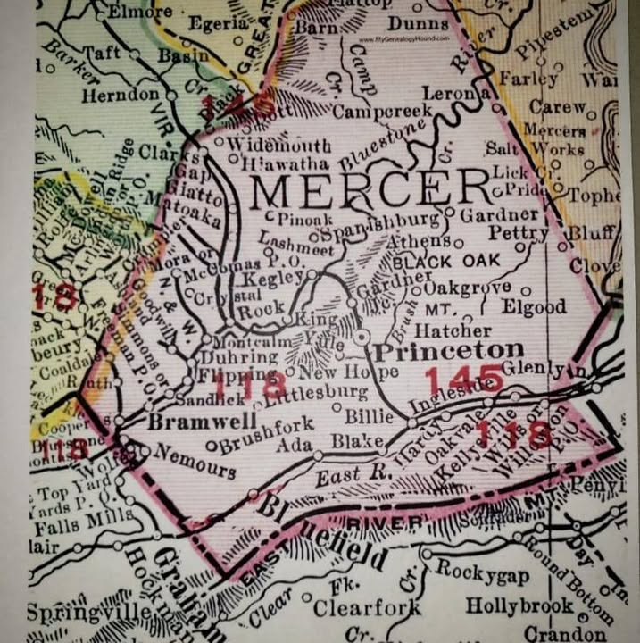

Trace your roots
Map your family's Mercer County
Communities move, merge and vanish. Our collection includes historic maps, plat books, cemetery records, church and school registers, newspapers and family files that help you place ancestors in the towns and hollows where they actually lived — from Princeton and Bramwell to the coal camps in between.
📚 Ask the research desk →